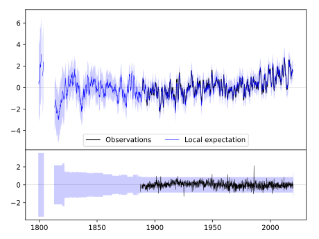
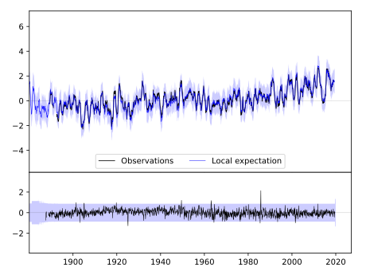
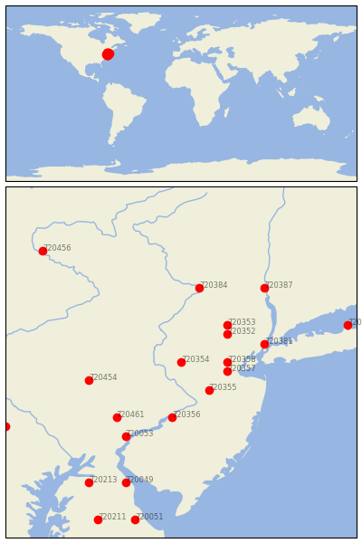

FLEMINGTON 5 NNW [USA]


| Neighbour | Name | Country | Distance | Lon/Lat | Years |
|---|
| 720354 | FLEMINGTON 5 NNW | USA | 0 | -74.9, 40.6 | 1887-2019 |
| 720355 | HIGHTSTOWN 2 W | USA | 41 | -74.6, 40.3 | 1876-2019 |
| 720358 | PLAINFIELD | USA | 42 | -74.4, 40.6 | 1876-2019 |
| 720357 | NEW BRUNSWICK 3 SE | USA | 43 | -74.4, 40.5 | 1863-2019 |
| 720352 | BOONTON 1 SE | USA | 53 | -74.4, 40.9 | 1876-2019 |
| 720353 | CHARLOTTEBURG RSVR | USA | 61 | -74.4, 41.0 | 1890-2019 |
| 720356 | MOORESTOWN | USA | 67 | -75.0, 40.0 | 1863-2019 |
| 720381 | NY CITY CNTRL PARK | USA | 79 | -74.0, 40.8 | 1821-2019 |
| 720454 | READING 4 NNW | USA | 87 | -75.9, 40.4 | 1888-2019 |
| 720461 | WEST CHESTER 2 NW | USA | 89 | -75.6, 40.0 | 1843-2019 |
| 720384 | PORT JERVIS | USA | 90 | -74.7, 41.4 | 1880-2019 |
| 720053 | WILMINGTON PORTER RE | USA | 102 | -75.5, 39.8 | 1887-2019 |
| 720387 | WEST POINT | USA | 116 | -74.0, 41.4 | 1824-2019 |
| 720049 | DOVER | USA | 153 | -75.5, 39.3 | 1870-2019 |
| 720385 | SETAUKET STRONG | USA | 157 | -73.1, 41.0 | 1876-2019 |
| 720213 | MILLINGTON 1 SE | USA | 167 | -75.9, 39.3 | 1893-2019 |
| 720462 | YORK 3 SSW PUMP | USA | 179 | -76.8, 39.9 | 1840-2019 |
| 720456 | TOWANDA 1 S | USA | 183 | -76.4, 41.8 | 1893-2019 |
| 720051 | MILFORD 2 SE | USA | 193 | -75.4, 38.9 | 1893-2019 |
| 720211 | DENTON 2 E | USA | 204 | -75.8, 38.9 | 1892-2019 |